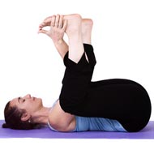
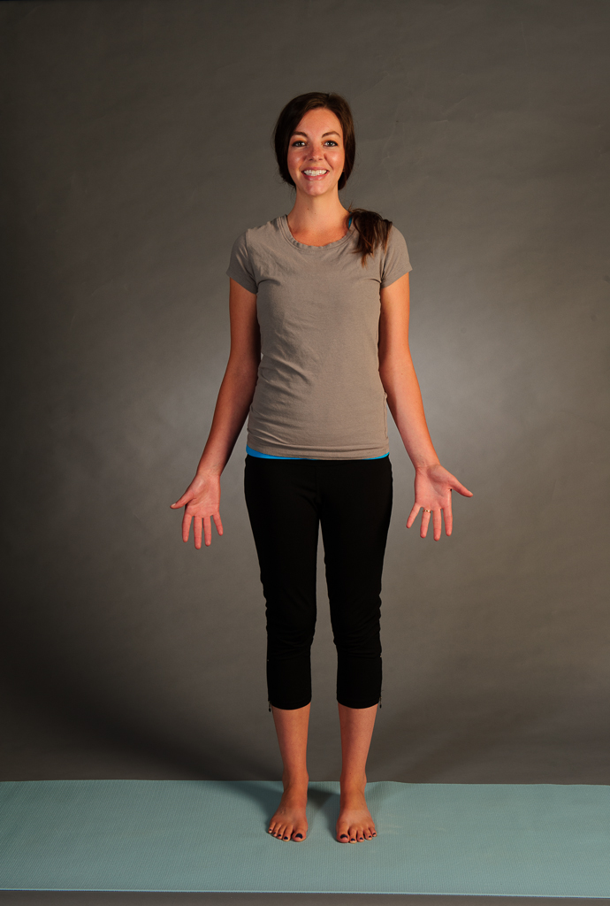

The character trait I would use to describe "Plank" pose is flexible because it demonstrates all of the different ways to experience yoga. For example if this pose is difficult for the person in it, they can adapt it to fit them by putting their knees down, and even further by untucking their toes. Alternativly, this pose is flexible in that if it is too easy, it can be turned to the side for "side plank", which is much more challenging. By allowing so much variation, this pose to me perfectly demonstrates the character trait adaptable, or flexible. This relates to me because I think of myself as an adaptable person who easily molds to new environments. While doing this pose, I feel that I have control of how much I push myself during a routine, and it reminds me to watch how much I push myself in life, and adapt to new situations and change aspects need be if they are too challenging, or not challenging enough.
I chose the character trait "openminded" for Happy Baby Pose because when I do this pose, I am reminded to be open to new experience, or actions that I may have previously thought odd, or unusual. By keeping an open mind, I am able to get the most out of this pose even though it may be considered embarassing or strange.
The character trait "empowering" relates to this pose because when I am in it, I feel connected to my body and mind equally, which takes me from any prior thought and helps me to believe in myself and vanquish my worry. While in the pose I feel strong and centered, leading me to feel confident mentally, and empowered overall.